Perfecto, Santiago
Te resumo y te explico en detalle técnico y conceptual el paper “Voxel based parallel post processor for void nucleation and growth analysis of atomistic simulations of material fracture” (Hemani et al., 2014), que es fundamental para análisis de cavitación en simulaciones atómicas.
RESUMEN GENERAL
El artículo propone y valida un método basado en vóxeles (volúmenes discretos) para analizar la nucleación, crecimiento y coalescencia de vacíos (voids) en materiales sometidos a fractura bajo tracción, usando datos obtenidos de simulaciones de dinámica molecular (MD).
El objetivo es reemplazar el método tradicional basado en tesselación de Voronoi, que es muy preciso pero extremadamente costoso computacionalmente, por un método más simple y rápido que además pueda paralelizarse eficientemente y analizar dominios de miles de millones de átomos.
CONTEXTO
Las simulaciones MD generan posiciones atómicas cada pocos femtosegundos.
Para estudiar la fractura, se necesitan conocer cómo se forman y crecen los vacíos entre átomos.
El método clásico (Voronoi/Delaunay) calcula volúmenes y caras de celdas atómicas, pero tiene complejidad O(n²) en el peor caso.
Esto lo hace inviable para simulaciones grandes (multimillón de átomos × miles de pasos de tiempo).
PROPUESTA DEL PAPER
Idea central
Discretizar el dominio de la simulación en una rejilla regular de vóxeles, donde cada voxel representa una celda unitaria del cristal.
Luego:
Marcar cada voxel como ocupado (1) si contiene el centro de un átomo, o vacío (0) si no.
Los vóxeles vacíos conectados representan un vacío físico (void).
Analizando las conexiones y tamaño de estos grupos de vóxeles se puede medir:
número de vacíos,
volumen de cada vacío,
crecimiento y coalescencia temporal.
ALGORITMOS
1. Voxelización (Algorithm 1)
Transforma la nube de átomos → rejilla 3D (OccFlag[i][j][k]).
Complejidad: O(n), donde n = número de átomos.
Salida: matriz de ocupación 3D (0 = vacío, 1 = ocupado).
- Análisis de vacíos – algoritmo serial (Algorithm 2–4)
Realiza una búsqueda tipo Depth-First Search (DFS):
Recorre todos los vóxeles.
Si encuentra un voxel vacío (0), le asigna un nuevo label (>1).
Explora recursivamente sus 6 vecinos (frente, atrás, izquierda, derecha, arriba, abajo).
Cada conjunto conectado de voxeles vacíos → un vacío único.
El tamaño del vacío se obtiene contando los vóxeles con el mismo label.
Complejidad: O(n_voxels).
Resultado: número total de vacíos y su volumen.
Ejemplo:
En una prueba con 10 millones de puntos:
Voro++: 42 minutos
Voxel method: 2.53 segundos (!)
PARALELIZACIÓN (MPI)
Tres versiones paralelas fueron desarrolladas con MPI-C:
- Paralelización temporal
Cada proceso analiza diferentes pasos de tiempo.
Simple, buena escalabilidad (speedup casi lineal).
Limitado por el número de timesteps.
Ideal para análisis post-processing.
Problema: cada nodo debe leer sus propios archivos → costoso en I/O.
- Pseudo domain decomposition
Divide el dominio espacial en subdominios cúbicos.
Cada proceso tiene una copia completa del dominio (por eso “pseudo”).
Los procesos exploran sus subdominios, pero pueden acceder a los vecinos si el vacío cruza el límite.
Se usa una jerarquía de prioridad por rank MPI para evitar duplicar trabajo.
Escala bien cuando los vacíos son locales, pero se degrada cuando los vacíos se extienden entre subdominios.
Aún limitado por memoria.
- Domain decomposition pura
Cada proceso almacena solo su subdominio local.
Intercambia información con vecinos en las caras compartidas (6 direcciones).
Los vacíos que cruzan fronteras se resuelven construyendo una tabla de conectividad global.
Solo el proceso con menor rank calcula el tamaño de un vacío compartido.
Permite analizar miles de millones de átomos, eliminando limitación de memoria.
Pero requiere más comunicación MPI y sincronización.
RESULTADOS
Caso de prueba:
Molybdeno (Mo) bajo tracción isotrópica.
20 millones de átomos, Δt = 1 fs, salida cada 500 pasos.
Simulación 20 ps.
Resultados físicos:
Volumen de vacíos crece primero exponencialmente, luego linealmente → coincide con el modelo NAG (Nucleation And Growth).
Número de vacíos aumenta, alcanza un máximo y luego decrece → evidencia de coalescencia.
Performance:
Serial: mucho más rápido que Voronoi.
Paralel temporal: mejor speedup (~40x en 140 cores).
Paralel espacial: escalabilidad limitada por I/O.
Integrado en LAMMPS (como compute module):
Lectura in-memory (sin I/O).
Escalabilidad casi lineal.
Mejor performance de todas las versiones.
CONCLUSIONES
El método basado en vóxeles es mucho más rápido que el método Voronoi, con una pérdida mínima de precisión.
Los resultados reproducen correctamente la física esperada del modelo de nucleación y crecimiento (NAG).
Se propusieron tres esquemas paralelos, siendo el tercero (domain decomposition) el más escalable.
Integrar el algoritmo dentro de LAMMPS evita el cuello de botella del I/O y mejora significativamente la velocidad.
Permite analizar dominios de miles de millones de átomos en tiempos razonables.
EN POCAS PALABRAS
Método Ventaja Desventaja Complejidad
Voronoi (Voro++) Muy preciso O(n²), lentísimo Alta
Voxel serial 10⁴ veces más rápido Requiere memoria proporcional al dominio O(n)
Paralel temporal Simple, speedup casi lineal Limitado por timesteps —
Pseudo DD Mejora parcial en speedup Requiere memoria total —
Domain Decomp. Escalable, sin límite de memoria Mucho intercambio MPI —
Integrado en LAMMPS Casi lineal, sin I/O Requiere modificar LAMMPS Mejor caso
Figuras del Paper (15)

Sin caption
Figura en pagina 1.

Figure 1: Void Analysis using serial algorithm
Figure 1: Void Analysis using serial algorithm

Sin caption
Figura en pagina 21.

Sin caption
Figura en pagina 22.
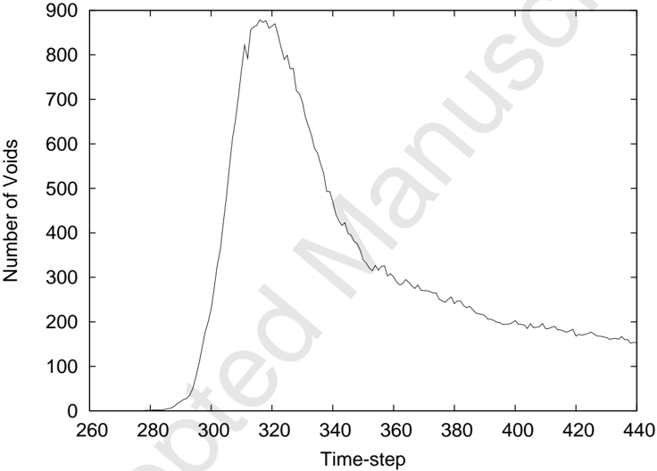
Sin caption
Figura en pagina 23.
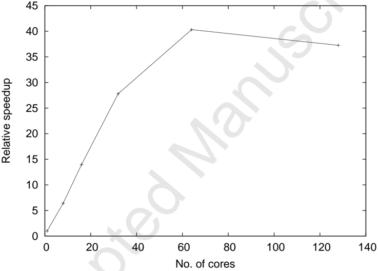
Sin caption
Figura en pagina 24.
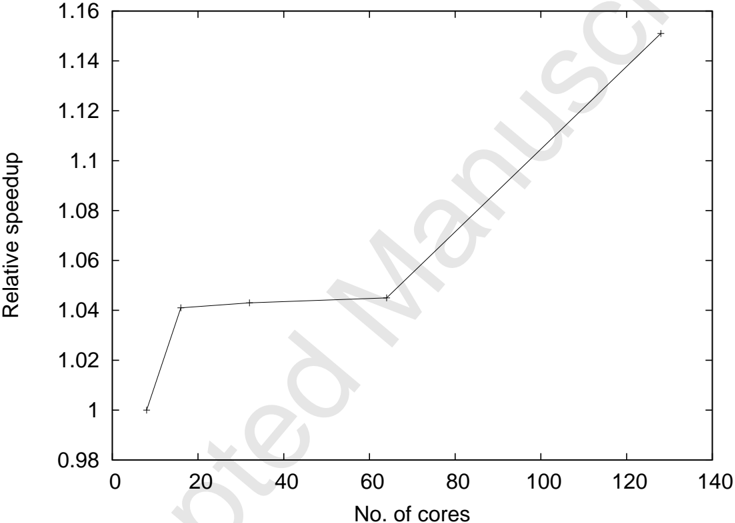
Sin caption
Figura en pagina 25.
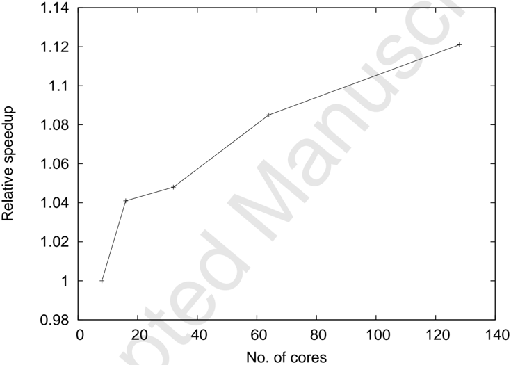
Sin caption
Figura en pagina 26.
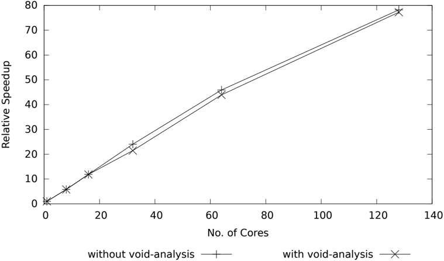
Sin caption
Figura en pagina 27.
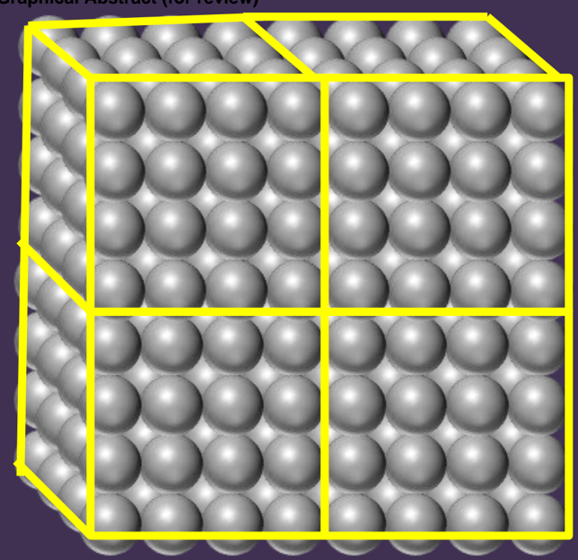
Sin caption
Figura en pagina 29.
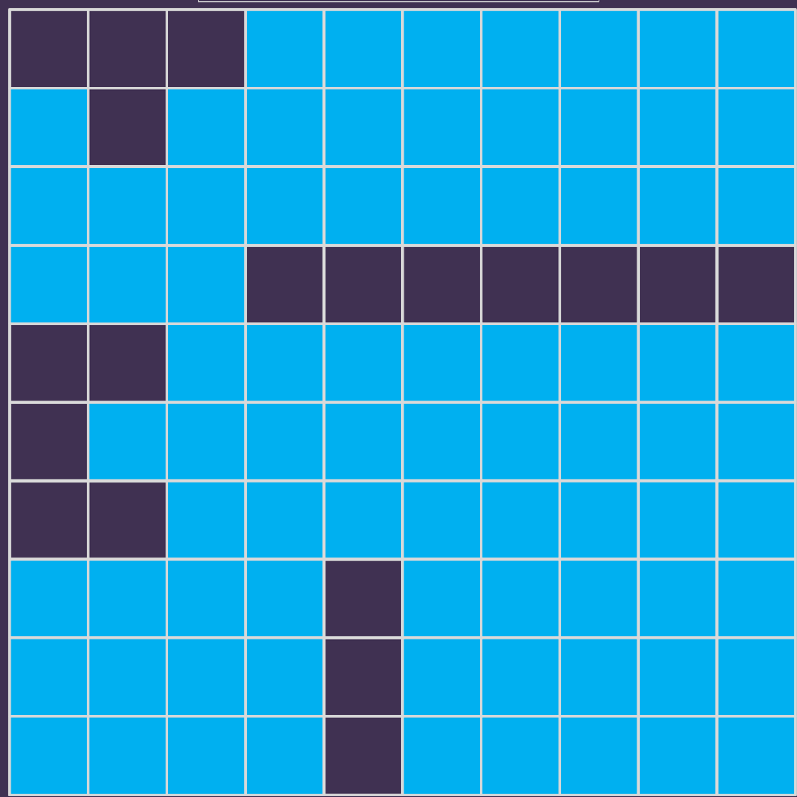
Sin caption
Figura en pagina 29.
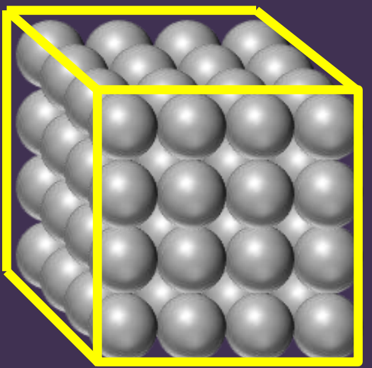
Sin caption
Figura en pagina 29.
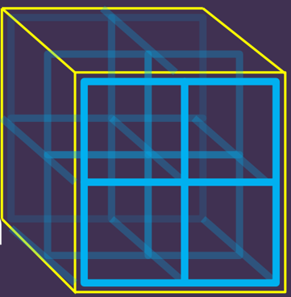
Sin caption
Figura en pagina 29.
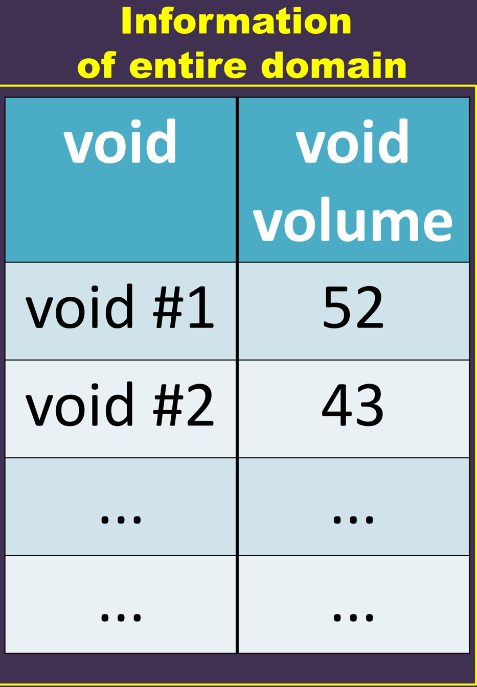
Sin caption
Figura en pagina 29.
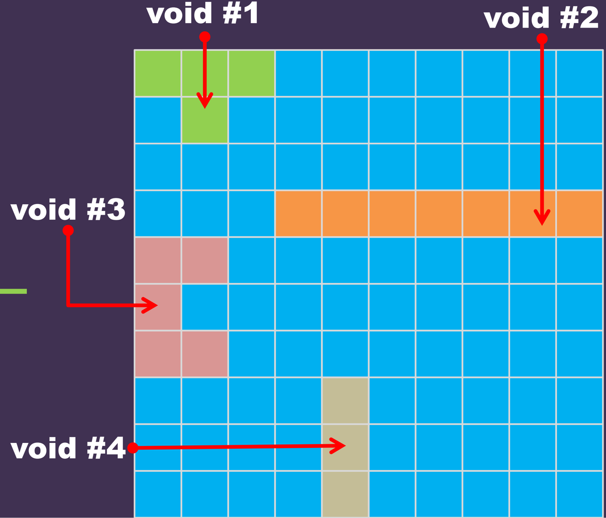
Sin caption
Figura en pagina 29.